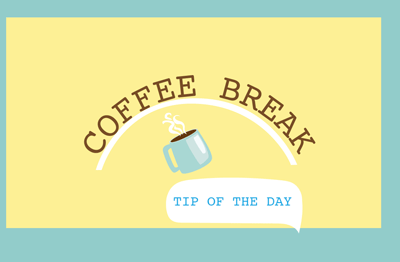
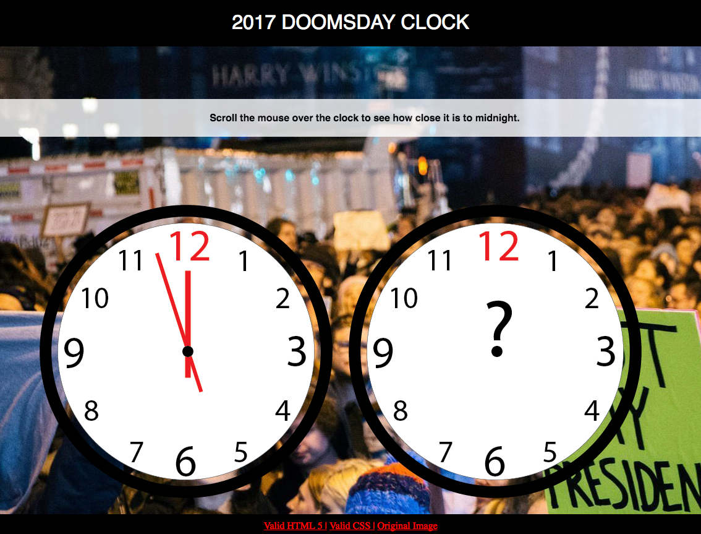
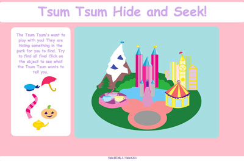
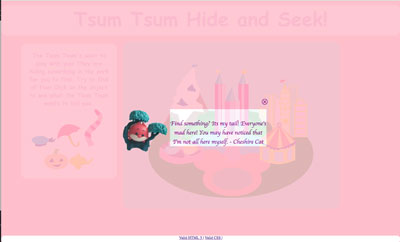
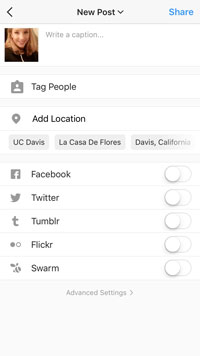

Blog 5- The Library- Tuesday, February 21st, 2017
For my library I chose to use “animate.css”. This library seemed to be pretty easy to understand and something I could utilize for my final project.
This library makes it easy to create animations using CSS. To access this library you have to download the css page from the
github page . You then have to link the style sheet in the header of your index for your website. After that, it is pretty simple to use, you just have to add a class
with the animation you want. For example, if you wanted your text to roll in you would code- div class= “animated rollIn”> text here /div. You then can style the
animation further by going into the css and adding –webkit-animation-delay: and the amount of seconds you want the animation to be delayed. The advantage to using this
library instead of a gif is that it is quicker to make, and you can use java script and jquery to further stylize single images/text on the web page. For example,
in this video , they are able to make it so that the text moves back and forth when a input is invalid. The issue with this
library is that the style sheet gets quite long and it does not validate.

Blog 4- Time Is on My Side- Wednesday, February 14th, 2017
I chose to base my concept on the doomsday clock for my time based interactive design. Originally, I had set out to create a web-page that would reference all of the years
the doomsday clock had existed with their corresponding information, but it turned out to be kind of boring and hard to navigate. So, I changed my plan and decided to create a web page that would just include
the year 2017. I think this design is more effective because it has a clear heirarchy, it encourages the user to interact with the page, and it is more visually interesting.

Blog 3- Pocket Full of Interface- Tuesday, February 7, 2017
I decided to use my Tsum Tsum collection for this exercise. Because these are toys and often targeted towards a younger audience, I decided to go with a friendly and childish theme.
I created the backdrop of "disneyland" in illustrator- and did the same with the small objects found on the web page. Because I was going for a child-friendly approach I decided to
make the interactivity into a sort of game for the user. When the user hovers over the various objects they grow in size- I wanted to make sure they didn't grow too much because
that would make the game too easy, but I wanted them to grow enough so that the user could feel like they were interacting with the web page. The items are also clickable and when clicked
an "aside" appears and you get a little quote from the character. Lastly, I wanted to make it easy for the user to return to the original page so I added an exit out button on the "aside".
 
Blog 2- Tuesday, January 30, 2017
In my most recent project I had to create a site that used input values to create a mad libs story. So, for this blog I will be analyzing a app that I use often that requires some sort of data entry.
It was a little bit difficult to think of data entry uses on websites other than the simple login and password. I think that the app I use the most that has a more unique data entry form is Instagram.
When posting a picture on Instagram you are given three fields of data entry- caption, tag people, and add location. It is very simple and to the point and allows for the user to have the option to
not tag anyone or not put a location on their picture. I think this is a good example of an app that is very clean in design and straight forward- which I think is what should be used for forms on websites/apps.
Link to Bill Derouchey's article on interface design here

Blog 1- Thursday, January 12, 2017
First blog enterance!
Today, I will be analyzing a interface that I use on a daily basis.
The interface that I use the most would have to be YouTube.
It has a quite simple design that I would describe as practical and
User friendly. The set up of the YouTube homepage is quite traditional, in that it has a navigation bar on the left, a search bar at the top, the login on the top right, and the content in the remaining area. It seems as though they did not want to venture out to far into making a creative layout as to keep the
navigation simple for the users. They also stuck to a relatively basic color scheme-black, red, white, and blue. I believe that this was a good choice because the videos that appear on the site have a wide range of colors, and so their color scheme does not compete with any of the videos. I think YouTubes strategy of keeping it simple is effective because the most important thing for their site is for the user to be able to navigate easily through the videos they want to watch.